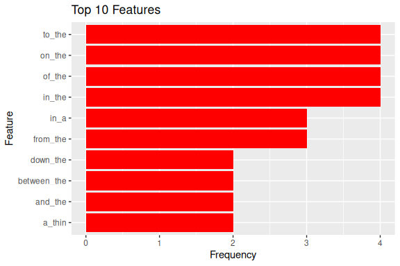
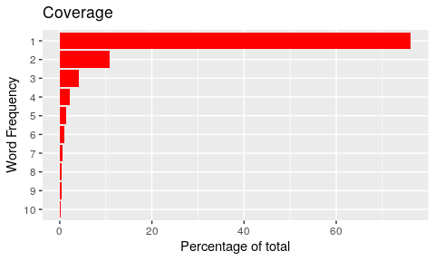

The goal of the wordpredictor package is to provide a flexible and easy to use framework for generating n-gram models for word prediction.
The package allows generating n-gram models from input text files. It also allows exploring n-grams using plots. Additionally it provides methods for measuring n-gram model performance using Perplexity and accuracy.
The n-gram model may be customized using several options such as n-gram size, data cleaning options and options for tokenization.
Installation
You can install the released version of wordpredictor from CRAN with:
install.packages("wordpredictor")And the development version from GitHub with:
# install.packages("devtools")
devtools::install_github("pakjiddat/word-predictor")Package structure
The wordpredictor package is based on R6 classes. It is easy to customize and improve. It provides the following classes:
- DataAnalyzer. It allows analyzing n-grams.
- DataCleaner. It allows cleaning text files. It supports several data cleaning options.
- DataSampler. It allows generating sample files of specified size from a text file. It also allows generating train, test and validation sample files from a given input text file.
- TokenGenerator. It allows generating n-gram tokens of given size.
- TPGenerator. It allows generating transition probabilities for the given n-gram file.
- ModelGenerator. It allows generating n-gram models using different configuration options.
- ModelEvaluator. It allows evaluating the performance of n-gram models. 4 metrics are used to compare the performance. These are: Perplexity, accuracy, memory and time taken.
- ModelPredictor. It allows predicting the next word, given a set of previous words.
- Base. The base class for all the other classes. It allows provides methods for reading and writing files and processing large text files.
Information about the package can be obtained using the command line or the package website. For example, the command: ?wordpredictor returns information about how the given class works and the parameter details for each class method.
Environment setup code
The following code should be run before running the examples.
library(wordpredictor)
# The level of verbosity in the information messages
ve <- 0
#' @description
#' Used to setup the test environment
#' @param rf The required files.
#' @param ve The verbosity level.
#' @return The list of directories in the test environment
setup_env <- function(rf, ve) {
# An object of class EnvManager is created
em <- EnvManager$new(rp = "../", ve = ve)
# The required files are downloaded
ed <- em$setup_env(rf)
return(ed)
}
#' @description
#' Used to clean up the test environment
clean_up <- function(ve) {
# An object of class EnvManager is created
em <- EnvManager$new(ve = ve)
# The test environment is removed
em$td_env(F)
}Generating the model
The following example shows how to generate a n-gram model.
# The required files
rf <- c("input.txt")
# The test environment is setup
ed <- setup_env(rf, ve)
# The following code generates n-gram model using default options for data
# cleaning and tokenization. See the following section on how to customize these
# options. Note that input.txt is the name of the input data file. It should be
# present in the data directory. ddir is the data directory. mdir is the model
# directory. The output model file, which is def-model.RDS will be placed in
# this directory.
# ModelGenerator class object is created
mg <- ModelGenerator$new(
name = "def-model",
desc = "N-gram model generating using default options",
fn = "def-model.RDS",
df = "input.txt",
n = 4,
ssize = 10,
dir = ed,
dc_opts = list(),
tg_opts = list(),
ve = ve
)
# Generates n-gram model. The output is the file def-model.RDS
mg$generate_model()
# The test environment is cleaned up
clean_up(ve)The above code generates the file def-model.RDS. This file represents the n-gram model.
Predicting words
The following example shows how to predict the next word given a set of words:
# The required files
rf <- c("def-model.RDS")
# The test environment is setup
ed <- setup_env(rf, ve)
# The model file name
mfn <- paste0(ed, "/def-model.RDS")
# An object of class ModelPredictor is created. The mf parameter is the name of
# the model file that was generated in the previous example.
mp <- ModelPredictor$new(mf = mfn)
# Given the words: "how are", the next word is predicted. The top 3 most likely
# next words are returned along with their respective probabilities.
res <- mp$predict_word(words = "how are", 3)
# The test environment is cleaned up
clean_up(ve)Analyzing N-grams
The wordpredictor package includes a class called DataAnalyzer, that can be used to get an idea of the frequency distribution of n-grams in a model. The model generation process described above, creates an n-gram file in the model directory.
For each n-gram number less than or equal to the n-gram size of the model, a n-gram file is generated. In the example above the n-gram size of the model is 4. So 4 n-gram files are generated in the model folder. These files are: n1.RDS, n2.RDS, n3.RDS and n4.RDS. The n2.RDS file contains n-grams of size 2.
The following example plots the top 10 most occurring bi-grams along with their frequencies:
# The required files
rf <- c("n2.RDS")
# The test environment is setup
ed <- setup_env(rf, ve)
# The file name
fn <- paste0(ed, "/n2.RDS")
# An object of class DataAnalyzer is created. The fn parameter is the path to
# the n-gram file.
da <- DataAnalyzer$new(fn = fn)
# The top 10 most occurring features are plotted
df <- da$plot_n_gram_stats(opts = list(
"type" = "top_features",
"n" = 10,
"save_to" = NULL,
"dir" = NULL
))
# The test environment is cleaned up
clean_up(ve)The following example plots the n-gram frequency coverage. It shows the percentage of n-grams with frequency 1, 2 … 10.
# The required files
rf <- c("n2.RDS")
# The test environment is setup
ed <- setup_env(rf, ve)
# The file name
fn <- paste0(ed, "/n2.RDS")
# An object of class DataAnalyzer is created. The fn parameter is the path to
# the n-gram file.
da <- DataAnalyzer$new(fn = fn)
# The top 10 most occurring features are plotted
df <- da$plot_n_gram_stats(opts = list(
"type" = "coverage",
"n" = 10,
"save_to" = NULL,
"dir" = NULL
))
# The test environment is cleaned up
clean_up(ve)The following example shows how to get the list of bi-grams starting with “great_” along with their frequencies. It also shows how to get the frequency of the bi-gram “great_deal”.
# The required files
rf <- c("n2.RDS")
# The test environment is setup
ed <- setup_env(rf, ve)
# The file name
fn <- paste0(ed, "/n2.RDS")
# An object of class DataAnalyzer is created. The fn parameter is the path to
# the n-gram file.
da <- DataAnalyzer$new()
# Bi-grams starting with "great_" are returned
df <- da$get_ngrams(fn = fn, c = 10, pre = "^great_*")
# The data frame is sorted by frequency
df <- df[order(df$freq, decreasing = T),]
# The frequency of the bi-gram "great_deal"
f <- as.numeric(df[df$pre == "great_deal", "freq"])
# The test environment is cleaned up
clean_up(ve)Customizing the n-gram model
The dc_opts parameter to the ModelGenerator class specifies the data cleaning options. The following code shows the data cleaning options and their default values:
# @field dc_opts The options for the data cleaner object.
# min_words -> The minimum number of words per sentence.
# line_count -> The number of lines to read and clean at a time.
# save_data -> If the combined processed lines should be saved.
# output_file -> Name of the output file used to store the data.
# sw_file -> The stop words file path.
# dict_file -> The dictionary file path.
# bad_file -> The bad words file path.
# to_lower -> If the words should be converted to lower case.
# remove_stop -> If stop words should be removed.
# remove_punct -> If punctuation symbols should be removed.
# remove_non_dict -> If non dictionary words should be removed.
# remove_non_alpha -> If non alphabet symbols should be removed.
# remove_extra_space -> If leading, trailing and double spaces
# should be removed.
# remove_bad -> If bad words should be removed
dc_opts = list(
"min_words" = 2,
"line_count" = 1000,
"save_data" = T,
"output_file" = NULL,
"sw_file" = NULL,
"dict_file" = NULL,
"bad_file" = NULL,
"to_lower" = T,
"remove_stop" = F,
"remove_punct" = T,
"remove_non_dict" = T,
"remove_non_alpha" = T,
"remove_extra_space" = T,
"remove_bad" = F
)The tg_opts parameter to the ModelGenerator class specifies the token generation options. The following code shows the token generation options and their default values:
# @field tg_opts The options for the token generator obj.
# min_freq -> All ngrams with frequency less than min_freq are
# ignored.
# stem_words -> If words should be transformed to their stems.
tg_opts = list(
"stem_words" = F,
"min_freq" = -1
)Evaluating model performance
The wordpredictor package allows evaluating n-gram model performance. It can measure the performance of a single model as well as compare the performance of multiple models. When evaluating the performance of a model, intrinsic and extrinsic evaluation is performed.
Intrinsic evaluation measures the Perplexity score for each sentence in a validation text file. It returns the minimum, maximum and mean Perplexity score for the sentences.
Extrinsic evaluation measures the accuracy score for the sentences in a validation text file. It tries to predict the last word of each sentence. If the word was correctly predicted, then the accuracy count is increased. The extrinsic evaluation returns the number of valid and invalid predictions.
The following example shows how to evaluate the performance of a model:
# The required files
rf <- c("def-model.RDS", "validate.txt")
# The test environment is setup
ed <- setup_env(rf, ve)
# The model file name
mfn <- paste0(ed, "/def-model.RDS")
# The validation file name
vfn <- paste0(ed, "/validate.txt")
# ModelEvaluator class object is created
me <- ModelEvaluator$new(mf = mfn, ve = 2)
# The performance evaluation is performed. The performance stats are returned as
# a data frame and also saved within the model file itself.
stats <- me$evaluate_performance(lc = 20, fn = vfn)
# The test environment is cleaned up
clean_up(ve)Demo
The wordpredictor package includes a demo called “word-predictor”. The demo is a Shiny application that displays the ten most likely words for a given set of words. To access the demo, run the following command from the R shell:
demo("word-predictor", package = "wordpredictor", ask = F).
The following is a screenshot of the demo:

Website
The wordpredictor website provides details about how the package works. It includes code samples and details of all the classes and methods.
Benefits
The wordpredictor package provides an easy to use framework for working with n-gram models. It allows n-gram model generation, performance evaluation and word prediction.
Limitations
The n-gram language model requires a lot of memory for storing the n-grams. The wordpredictor package has been tested on a machine with dual core processor and 4 GB of RAM. It works well for input data files of size less than 40 Mb and n-gram size 4. For larger data files and n-gram size, more memory and CPU power will be needed.
Future Work
The wordpredictor package may be extended by adding support for different smoothing techniques such as Good-Turing, Katz-Back-off and handling of Out Of Vocabulary Words.
Support for different types of n-gram models such as Skip-Grams and Syntatic n-grams.
The wordpredictor package is used for predicting words. It may be extended to support other use cases such as spelling correction, biological sequence analysis, data compression and more. This will require further performance optimization.
The source code is organized using R6 classes. It is easy to extend. Contributions are welcome !.
Acknowledgments
I was motivated to develop the wordpredictor package after taking the courses in the Data Science Specialization offered by John Hopkins university on Coursera. I would like to thank the course instructors for making the courses interesting and motivating for the students.